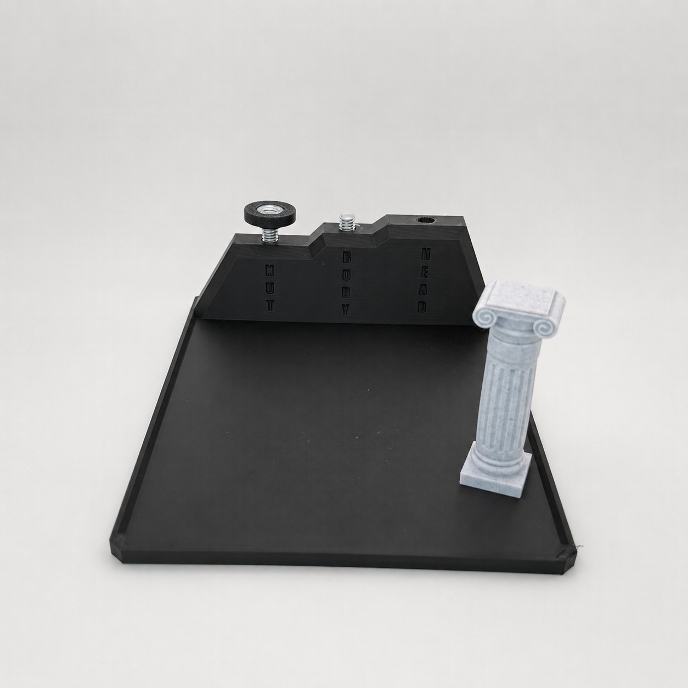
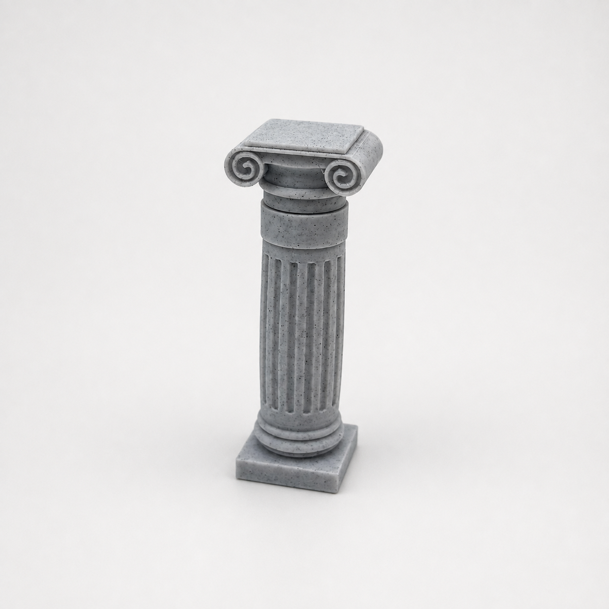
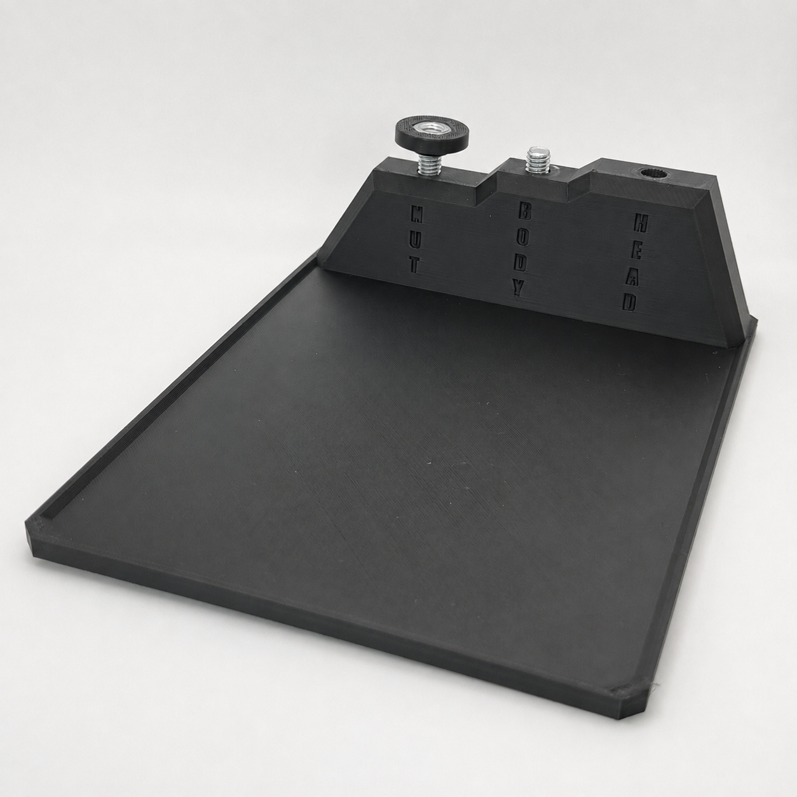
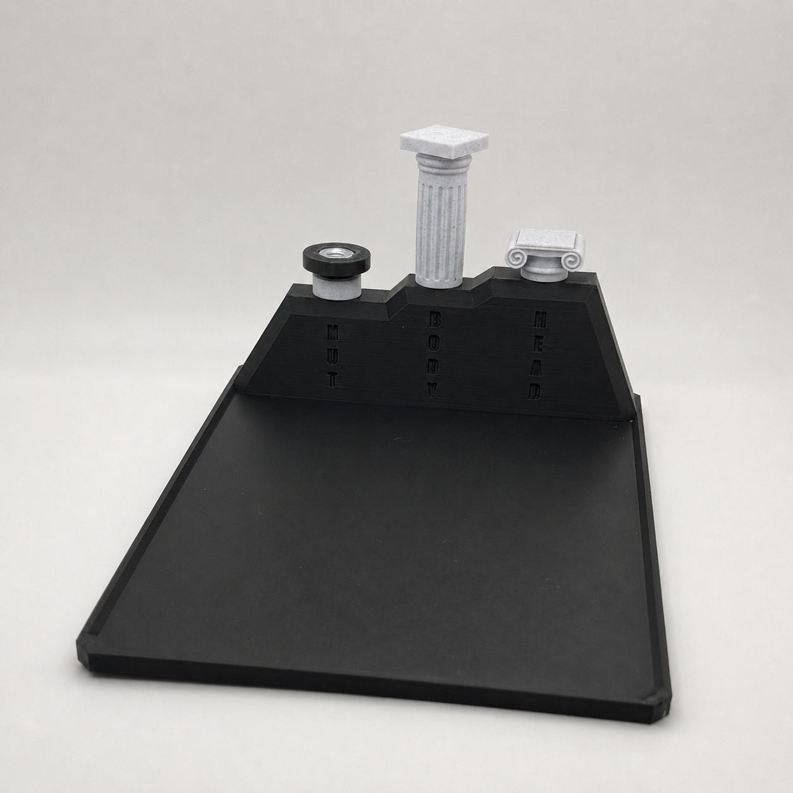

Small Production Problems. Working Custom Tooling. Minimal Risk.
We design, print, test, and deliver custom jigs and fixtures that reduce repetitive labor, improve consistency, and avoid the cost and lead time of traditional tooling.
- Designed and physically tested
- Fast FDM iteration
- No working tool, no invoice

Case Study
From Manual Holding to Repeatable Batch Assembly
A commercially sold GPU support product required three bonded components to be manually aligned and held under pressure while the adhesive cured. The operator could not begin another assembly until the bond had set, limiting throughput and introducing inconsistent alignment.



The Fixture
The custom fixture:
- Locates three different components in the correct relative position
- Maintains alignment through the full cure cycle
- Applies consistent clamping pressure without operator effort
- Frees the operator to begin another assembly while the first cures
- Supports repeatable production across shifts and operators
Across three timed assemblies, average hands-on assembly time fell from 142 seconds to 77 seconds. The fixture saved 65 seconds of operator time per unit, a 46% reduction.
Why Choose Us
Tooling Built Around a Defined Problem, Not a Print File
Done for you
We handle the design, printing, testing, and revision—not just the CAD file.
Rapid iteration
FDM allows functional prototypes to be tested and improved without waiting weeks for machined tooling.
Measurable purpose
Every tool begins with a defined production problem and an agreed functional requirement.
Low purchasing risk
If the tool cannot meet the agreed requirement after the included revision, there is no invoice.
Appropriate Applications
Where FDM Production Tooling Fits
- Assembly and alignment fixtures
- Adhesive-curing fixtures
- Part nests and holding aids
- Drill and positioning guides
- Go/no-go gauges
- Masking and inspection aids
- Ergonomic production tools
- Low-volume replacement tooling
FDM is not suitable for every application. High-load, safety-critical, extreme-temperature, severe-wear, or tightly certified applications are screened out before a project begins.
How It Works
Four Steps From Problem to Working Tool
-
1
Send a short process video
Show us the repetitive assembly, holding, alignment, or inspection problem on your line.
-
2
Receive a fit assessment and fixed proposal
We confirm whether FDM tooling is appropriate and define the functional requirement.
-
3
We design, print, test, and revise
A working prototype is built and physically tested against the agreed requirement.
-
4
Receive the working tool and design files
You get the finished tool plus final CAD and printable files.
The Offer
Rapid Production Tooling Sprint
- Free initial fit assessment
- One clearly defined production problem
- Custom tooling design
- Physical prototype and testing
- One included revision
- Finished production tool
- Final CAD and printable files
- Fixed project price provided before work begins
- No hourly billing
- No working tool, no invoice
Founding-client pricing is provided after the free fit assessment.
Send Us Your Production ProblemGuarantee: “No working tool, no invoice.” This guarantee applies to the agreed functional requirement defined during the fit assessment, not to guaranteed financial savings.
Contact
Send Us Your Production Problem
Tell us about the repetitive assembly, holding, alignment, or inspection problem you're dealing with. We'll review it and let you know whether rapid tooling is a fit.
Prefer email? Reach us directly at hello@fixturesprint.com.
FAQ
Frequently Asked Questions
What types of tooling can you make?
Assembly and alignment fixtures, adhesive-curing fixtures, part nests and holding aids, drill and positioning guides, go/no-go gauges, masking and inspection aids, ergonomic production tools, and low-volume replacement tooling.
How quickly can a project be completed?
Timelines depend on the complexity of the requirement and how many revisions are needed, but FDM prototyping is designed to move in days, not the weeks typical of machined tooling. A specific timeline is provided with your fixed proposal.
What information do you need?
A short video of the repetitive process, a description of the problem, and any known constraints (space, materials, existing fixtures, or tolerances) help us scope the project accurately.
What happens if FDM is not appropriate?
We'll tell you during the free fit assessment. High-load, safety-critical, extreme-temperature, severe-wear, or tightly certified applications are screened out before any project begins, so you won't pay for tooling that isn't the right fit.
What does "no working tool, no invoice" mean?
If the delivered tool cannot meet the functional requirement we agreed on—after the included revision—you are not invoiced. This guarantee applies to meeting that agreed requirement, not to guaranteed financial savings.
Do I receive the design files?
Yes. Final CAD and printable files are delivered along with the finished tool.
Can you copy or modify an existing fixture?
Yes, if you can share a sample, drawing, or video of the existing fixture, we can evaluate modifying or rebuilding it to fit a new requirement.